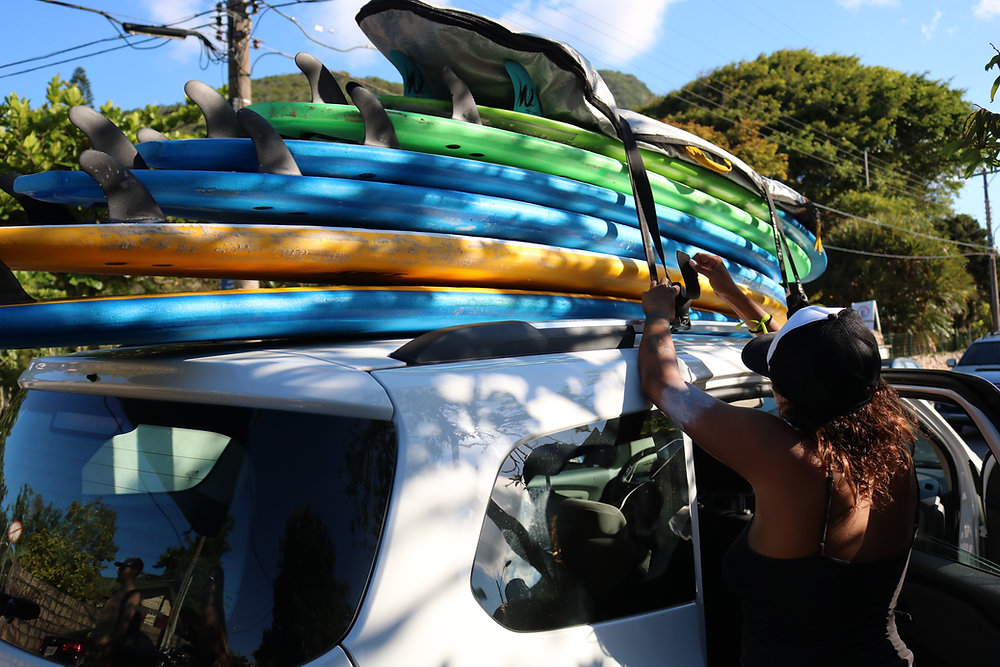

Descubra os destinos de surf mais épicos ao redor do mundo! De praias tropicais com ondas perfeitas a recantos escondidos onde apenas os locais conhecem, há um destino de surf para cada tipo de surfista.
Explore nossos guias detalhados de destinos de surf populares e menos conhecidos. Encontre informações sobre as melhores épocas do ano para visitar, as condições das ondas, dicas de hospedagem e muito mais.
Além de informações práticas sobre condições de ondas e hospedagem, também fornecemos insights locais e recomendações pessoais para garantir que sua viagem de surf seja verdadeiramente memorável. Quer você esteja em busca de tubos perfeitos, longas paredes para manobras ou simplesmente um lugar tranquilo para relaxar e recarregar as energias, há um destino de surf que atenderá às suas expectativas.
Nossos guias de destinos são cuidadosamente elaborados para fornecer uma visão abrangente de cada local, desde as melhores épocas do ano para visitar até dicas de como evitar multidões e explorar os segredos locais. De Fiji à Indonésia, da Califórnia à Austrália, o mundo está repleto de destinos de surf esperando para serem explorados.
Seja você um aventureiro em busca das ondas mais desafiadoras ou alguém que prefere um ambiente mais descontraído, há um destino de surf esperando por você. Prepare-se para embarcar em uma viagem inesquecível e descobrir novos horizontes sobre as pranchas!
Então, escolha seu destino, arrume sua prancha e prepare-se para uma jornada inesquecível pelas águas azuis do surf. A aventura aguarda, e estamos aqui para ajudá-lo a torná-la realidade.